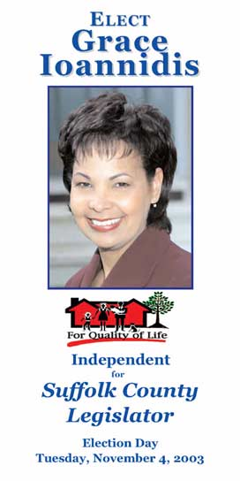
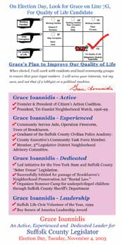
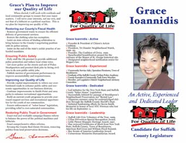
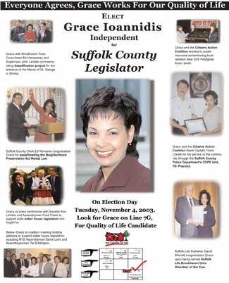
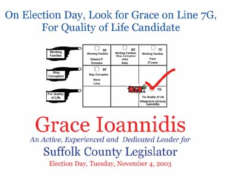
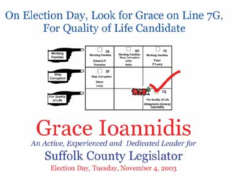

Political Campaigns
Over the years, PRMG and its staff have worked with some of Long Island's leading political organizations and governmental leaders. PRMG President John Zaher has over ten years of public sector and political campaign experience. These employments and consultancies have included:
Government Employments
Congressman Rick Lazio
Nassau County Executive Tom Gulotta
Suffolk County District Attorney James Catterson
Campaigns
Lazio for a New Congress - ‘92 *
Boyle for Assembly ‘94 *
Lazio for Congress ‘94 – 2000 *
Joan Johnson for Congress ‘00
Barton for District Court ‘01 *
Lee Snead for Assembly ‘02
Lori Hulse Montefusco for Riverhead School District ‘03 *
Patchogue Village Elections ’2004 *
Babylon Republican Committee 2003
Grace Ioannidis for County Legislature 2003
* Denotes winning campaign
Political Campaign Samples
Palm Card
 Brochures
Print Advertising
Direct Mail
 

Video
Click on the link below to preview samples of our political commercials (your computer must have Macromedia Shockwave). When the file opens, use the buttons on the screen to play, stop, forward and rewind the video. For additional samples of video productions, go to our video production page. Copies or higher resolution files available upon request.
Bumpy Roads - Babylon Republican Committee, October 2003 (1.2MB)
Paging Assemblywoman Eddington - Brookhaven Town Republican Pre-Primary Committee, May 2003 (456k)